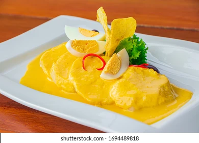

Receta de Huancaina

Esta es la receta para una de las mejores Papa a la Hauancaina que probaras.
Ingredientes
- Papa arenosa
- Leche
- Aji amarillo
- Galletas de Soda
Pasos
- Pelar las Papas
- Sancochar las Papas
- Pelar el Aji Amarillo
- Hechar el aji en una licuadora
- Agregar la leche y galletas a la licuadora
- Licuar hasta que tenga una textura cremosa
- Retirar las papas de la olla una vez sancochadas
- Cortar las papas en rodajas y servirlas en un plato
- Hechar la crema encima de las papas
- Disfrutalo